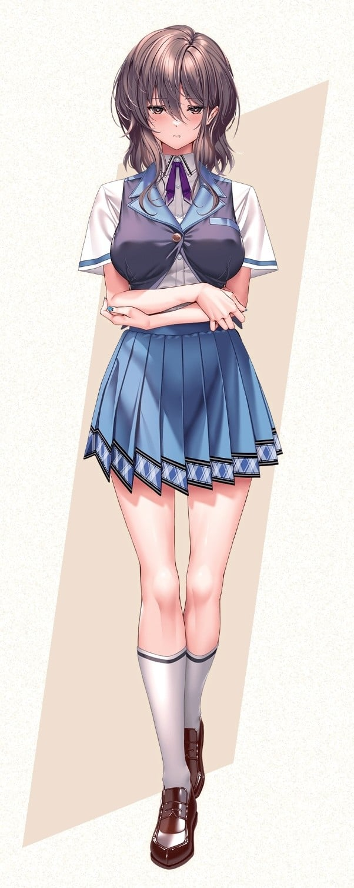

GuanHua Yu is quieter in person than this website makes him look. He likes interfaces with visible personality, old desktop metaphors, music, and small digital experiments that feel handmade instead of optimized to death.
He tends to keep half-finished ideas around longer than he should, mostly because a rough draft can still contain something worth returning to. This site is where those fragments, notes and experiments are allowed to stay visible.
GuanHua Yu 本人比這個網站安靜很多。喜歡帶有人味的介面、老式桌面系統、音樂，以及那些看起來有點沒必要、但做起來很有趣的小型數位實驗。
比起把所有東西整理成一份完美的作品集，更習慣把草稿、片段、筆記和還沒完成的想法先留下來。這個網站就是給這些東西的一個長期存放處。